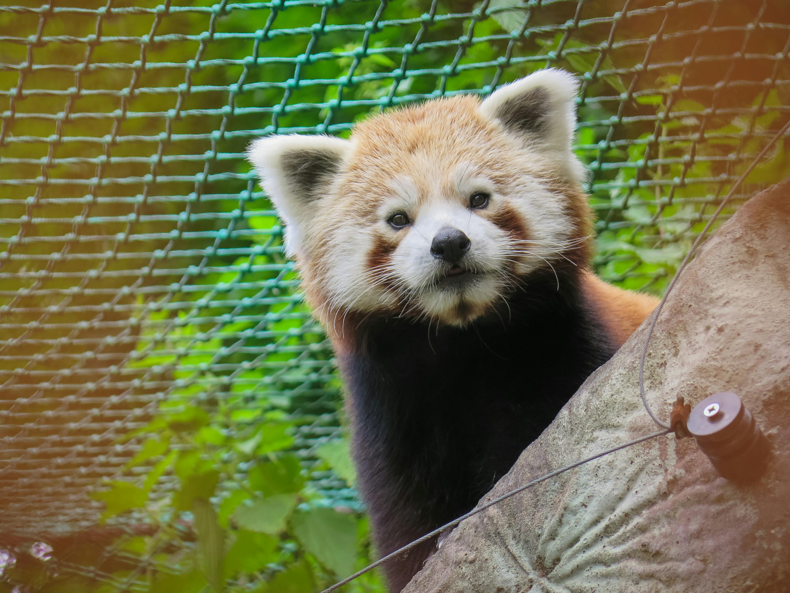

Red Panda Conservation Initiative
Red pandas, with their rust-colored fur and distinctive white markings, live in the bamboo forests of the eastern Himalayas. Though their name suggests a link to giant pandas, they're more closely related to raccoons. These tree-dwelling animals are agile climbers, using their long, bushy tails for balance while foraging for bamboo shoots, fruit, and occasionally small animals. Known for their gentle nature and playful behavior, red pandas can be seen alone or in pairs in the wild. Unfortunately, they face threats from habitat loss and illegal wildlife trade, making conservation efforts essential for their survival and the health of their ecosystem.

Red pandas are endangered primarily due to habitat loss, poaching, and climate change. Their natural habitats in the eastern Himalayas are being destroyed by deforestation for agriculture, logging, and infrastructure development. Additionally, red pandas are often hunted for their fur and captured for the illegal pet trade. Climate change also poses a threat by altering the bamboo forests they depend on for food. These factors have led to a significant decline in their population, making conservation efforts critical for their survival.
Why Help?
Saving red pandas is crucial because they are a unique species that contribute to the biodiversity and health of their ecosystem. They help maintain the balance of their habitat by controlling bamboo populations, and their presence indicates the overall health of their environment. Additionally, red pandas have cultural significance and attract ecotourism, providing economic benefits to local communities. Protecting them also reflects our ethical responsibility to preserve endangered species and their habitats, which are threatened by human activities like habitat loss and illegal wildlife trade.